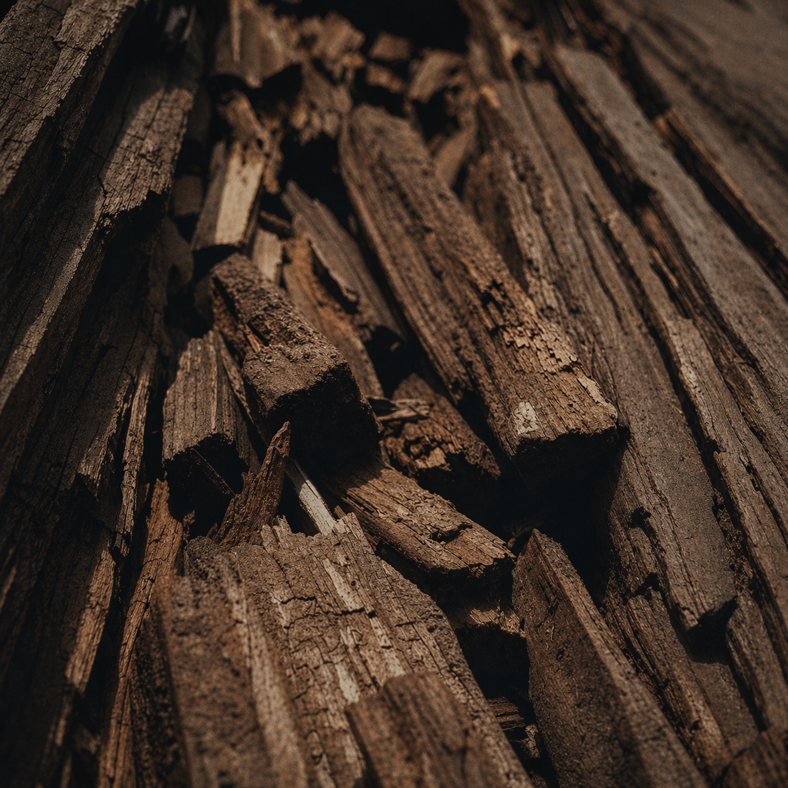

01 SCENT향의 중심
가장 먼저 기억되길 원하는 향의 축을 선택하세요.

The Discovery · 소요 1–2분
감정에서 출발해 상황·계절·밀도까지 4단계를 거치면, 당신에게 가장 자연스러운 향의 방향이 선명해집니다. 선택은 언제든 되돌릴 수 있습니다.
회원가입 불필요 · 선택 데이터는 브라우저에만 저장되며 언제든 초기화할 수 있습니다.
Mood & Context
가장 먼저 향 계열을 선택해 주세요.
4단계 순서대로 고를수록 추천 정확도가 올라가며, 선택은 언제든 되돌릴 수 있습니다.
선택 진행 0 / 4 완료
향 계열부터 순서대로 고르면 공식이 완성됩니다.
현재 선택아직 없음 · 향 계열부터 시작하세요

01 SCENT가장 먼저 기억되길 원하는 향의 축을 선택하세요.
향이 가장 자주 머무를 장면을 선택하세요.
 03
SEASON
03
SEASON
지금의 온도와 습도에 어울리는 계절을 선택하세요.
오늘 전달하고 싶은 인상의 결을 선택하세요.
시작하려면 향 계열을 선택하세요. 3개 이상 선택 시 추천 신뢰도가 상승합니다.
Live Direction
선택할수록 방향이 구체화되며, 추천 전에도 충분한 확신을 쌓을 수 있습니다.
Empty State · 대기 중
향 계열부터 선택하면 예상 향 방향을 즉시 보여드립니다. 선택이 늘어날수록 설명이 구체화됩니다.
Best for · 시작 전 단계
3단계 완료 시 75%+, 4단계 완료 시 90%+로 상승합니다.
Scent Character · Optional
잔향의 밀도를 한 단계 선택하면 추천 결과의 무게 중심이 재조정됩니다. 1단계(가장 가벼움)부터 5단계(가장 진함)까지.
밀도를 선택하면 라이브 해석의 Projected Density 값과 최종 추천의 잔향 방향이 즉시 갱신됩니다.
Recommendation
추천 결과 보기를 누르면 이미지·근거·유사 향이 같은 순서로 갱신됩니다. 결과는 URL로 공유하거나 기프트 페이지로 바로 연결됩니다.

Crafted for your mood
FIT—
Family · —
선택이 완료되면 조향사 에디토리얼 추천 문장과 함께 결과가 업데이트됩니다.
Best for · —
Key notes · —
향·상황을 포함한 3단계 이상 선택 시 결과가 확정됩니다. 4단계 모두 완료 시 유사 향 대안까지 제시됩니다.
Reason 01 · Note Fit
향 계열과 무드 선택이 결합되면 Top·Middle·Base 노트의 적합도(%)가 표시됩니다.
Reason 02 · Usage
상황과 계절 선택에 따라 추천 착용 장면·예상 지속시간이 갱신됩니다.
Reason 03 · Batch
밀도 선택 후 배치 캐릭터와 체감 온도 반응 프로파일이 조정됩니다.
Related Profiles
추천 향과 결이 맞는 대안 최대 3종을 함께 탐색하며 선택의 폭을 넓혀보세요.
추천이 확정되면 이 영역에 유사 향 3종이 Fit Score 순으로 채워집니다.
Editorial Note · Vol.01
숫자로 정리된 추천 옆에, 조향사가 쓴 서사형 노트를 덧붙입니다. 첫인상부터 잔향, 가장 어울리는 순간까지 한 편의 기록으로 읽어보세요.
Editorial · 2 min read · Perfumer's Note
추천이 확정되면 향이 만들어내는 공기와 인상을 2–3문장의 장면으로 기록합니다. 텍스트는 선택한 무드·계절·밀도 조합에 따라 달라집니다.
By Le Labo Perfumer
Next Step
선택이 완료되면 이곳에 당신의 향 방향 요약이 표시되고, Shop·Gift로 바로 연결됩니다. 지금은 최소 3단계 이상 선택 후 다시 확인해 보세요.
Current Direction · Pending